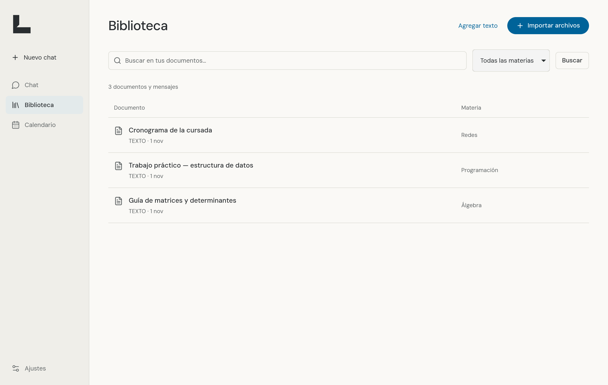

Tu material, a mano.
Importá PDF, documentos y presentaciones. Buscá por tema, frase o materia. La extensión también trae documentos de tus carpetas de Teams.
Tu material de la facu, tus preguntas y tus próximas fechas.
Un espacio para encontrar tu ritmo.
Ese PDF, el mensaje del profe, la fecha del parcial. Reuní lo que necesitás para estudiar y volvé a encontrarlo cuando haga falta.

Importá PDF, documentos y presentaciones. Buscá por tema, frase o materia. La extensión también trae documentos de tus carpetas de Teams.
Usá tu proveedor de IA para consultar los apuntes. Las citas te llevan al fragmento original para que puedas comprobar la respuesta.
Revisá entregas y exámenes en la agenda. Corregí las fechas detectadas y llevá las confirmadas a Google Calendar.
Descargá, instalá e importá tu primer archivo. Los runtimes ya están incluidos.
Versión 0.1.3 · Beta pública · Gratis
Instalador para equipos de 64 bits.
Ver instaladores Instalador .exeElegí el procesador de tu Mac.
Apple Silicon Mac con Intel ↗Archivo .dmgAppImage o paquete para Ubuntu/Debian.
AppImage Ubuntu / Debian .deb ↗Equipos de 64 bitsConsultá los archivos disponibles y sus sumas SHA-256 en GitHub Releases.
Abrí el archivo .exe y seguí el asistente. Esta beta no tiene firma comercial: si Windows muestra SmartScreen, podés revisar el origen y usar «Más información → Ejecutar de todas formas» para instalar esta versión.
En «Acerca de esta Mac» podés ver si tu equipo usa un chip Apple o Intel. Descargá esa versión, abrí el .dmg y arrastrá Lupino a Aplicaciones. Como esta beta aún no está notarizada, macOS puede pedir que autorices su apertura en Configuración del Sistema → Privacidad y seguridad → Abrir igualmente.
En Ubuntu o Debian, abrí el .deb con el instalador de software. Para AppImage, abrí Propiedades → Permisos, permití ejecutar el archivo y hacé doble clic. Las dependencias del escritorio pueden variar según tu distribución.
Abrí Biblioteca → Importar archivos. Elegí una materia y cargá un documento. Ya podés buscarlo; conectá una IA cuando quieras empezar a preguntar.
La extensión es opcional y se instala desde la configuración del navegador. En Lupino, Ajustes → Teams te guía para vincular tus carpetas. También podés empezar importando archivos directamente.
La biblioteca, la búsqueda y el calendario funcionan sin IA. Para el chat podés conectar ChatGPT, Cursor o una API key de Anthropic. Cada proveedor aplica sus límites y condiciones. Claude usa el Agent SDK oficial; el consumo de API se factura separado de Claude.ai.
La biblioteca queda en tu computadora. Al usar el chat, el proveedor elegido recibe la pregunta, el historial reciente y los fragmentos que consulta. La sesión de Microsoft permanece en el navegador.
Podés abrir una fecha en Google para revisarla y guardarla, o importar las confirmadas juntas con un archivo .ics. Es una copia puntual: los cambios posteriores no se sincronizan. Las fechas con horario llevan una duración sugerida de una hora, editable en Google.
Admite PDF con texto, DOCX, PPTX, TXT y Markdown. Los documentos escaneados necesitan OCR externo. Las fechas detectadas deben revisarse: podés confirmarlas, corregirlas o descartarlas. Los recordatorios necesitan la computadora encendida y Lupino abierto o en la bandeja.